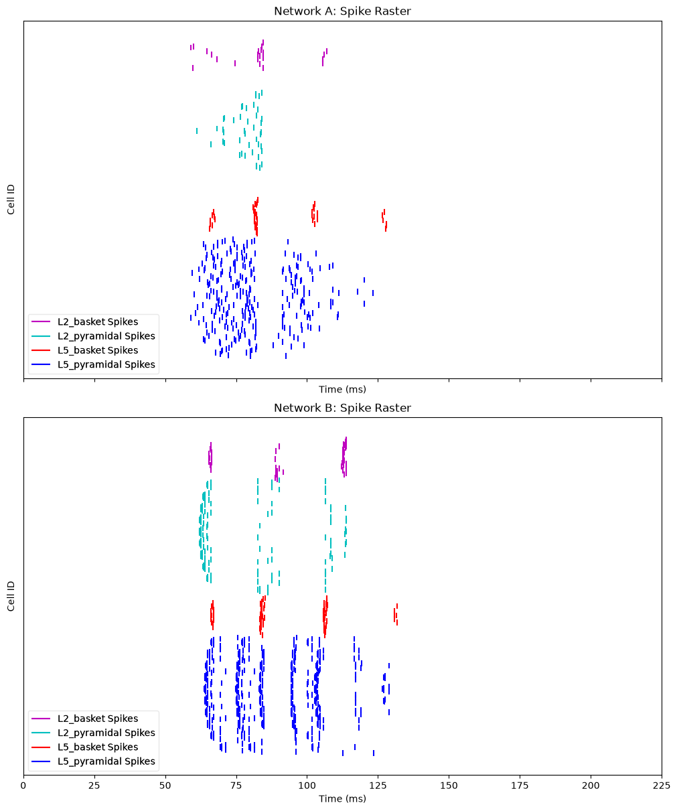

7.12 Replaying Spike Data as Input
Welcome to this hands-on tutorial on simulating communication between
two neocortical networks using HNN-Core! This notebook guides you
through creating a source network (Network A), extracting its spike
data, feeding it into a target network (Network B) using the
add_spike_train_drive method, simulating both, and
visualizing the results. Let's dive in!
# Authors: Maira Usman
Step 1: Setting Up the Source Network (Network A)
Our journey begins with Network A, the source of neural activity.
We'll use the neymotin_2020_model to create a realistic
neocortical network and simulate it with an evoked drive to generate
spike data. This step mimics how a network might produce activity in a
real brain region, which we'll later transmit to another network.
The simulation runs for 170 ms, and we'll save the spike data to a temporary file for efficient handling.
import numpy as np
import matplotlib.pyplot as plt
from hnn_core import neymotin_2020_model, simulate_dipole, read_spikes
import os.path as op
import tempfile
# Create and simulate Network A
print("Creating and simulating Network A...")
net_A = neymotin_2020_model()
net_A._params.update({'tstop': 170.0})
# Add a drive to generate activity
print("Adding drive to Network A...")
drive_params = {
'name': 'evdist1', 'mu': 63.5, 'sigma': 3.8, 'numspikes': 1,
'location': 'distal', 'event_seed': 274
}
weights = {
'ampa': {'L2_basket': 0.006, 'L2_pyramidal': 0.0005, 'L5_pyramidal': 0.14},
'nmda': {'L2_basket': 0.019, 'L2_pyramidal': 0.004, 'L5_pyramidal': 0.08}
}
delays = {'L2_basket': 0.1, 'L2_pyramidal': 0.1, 'L5_pyramidal': 0.1}
net_A.add_evoked_drive(
**drive_params, weights_ampa=weights['ampa'], weights_nmda=weights['nmda'],
synaptic_delays=delays
)
# Simulate and save spike data
print("Simulating Network A and saving spikes...")
dpls_A = simulate_dipole(net_A, tstop=170.0, n_trials=1)
with tempfile.TemporaryDirectory() as tmp_dir:
spike_file = op.join(tmp_dir, 'spk_%d.txt')
net_A.cell_response.write(spike_file)
cell_response = read_spikes(op.join(tmp_dir, 'spk_*.txt'))
print(f"Extracted {sum(len(t) for t in cell_response.spike_times)} spikes from Network A")
Step 2: Configuring the Target Network (Network B)
Now, let's set up Network B, the target network that will receive
spike data from Network A. We'll extract spikes from the first trial of
Network A, filter for pyramidal cells, and format them into a dictionary
compatible with add_spike_train_drive. This process is akin
to distributing computed data across nodes in an MPI setup, where each
node (here, Network B) processes a subset of the input.
We'll also define connection properties to map Network A's pyramidal cells to Network B's layers, ensuring a realistic interaction.
print("Creating and configuring Network B...")
net_B = neymotin_2020_model()
net_B._params.update({'tstop': 225.0})
# Extract spike data from first trial and filter for pyramidal cells
trial_idx = 0
spike_times = cell_response.spike_times[trial_idx]
spike_gids = cell_response.spike_gids[trial_idx]
spike_types = cell_response.spike_types[trial_idx]
pyramidal_mask = np.array([t in ['L2_pyramidal', 'L5_pyramidal'] for t in spike_types])
filtered_times = np.array(spike_times)[pyramidal_mask]
filtered_gids = np.array(spike_gids)[pyramidal_mask]
filtered_types = np.array(spike_types)[pyramidal_mask]
spike_data = {f"NetA_{t}_GID{g}": [] for t, g in zip(filtered_types, filtered_gids)}
for t, g, time in zip(filtered_types, filtered_gids, filtered_times):
src_id = f"NetA_{t}_GID{g}"
spike_data[src_id].append(time)
print(f"Number of valid pyramidal cells with spikes to be used for input: {len(spike_data)}")
# Define target configuration
conn_properties = {
'L5_pyramidal': {'location': 'distal', 'weights_ampa': 0.005, 'synaptic_delays': 1.5},
'L2_pyramidal': {'location': 'proximal', 'weights_ampa': 0.003, 'synaptic_delays': 1.0}
}
target_config = {}
source_ids = list(spike_data.keys())
for i, src_id in enumerate(source_ids):
target_type = 'L5_pyramidal' if i % 2 == 0 else 'L2_pyramidal'
props = conn_properties[target_type]
target_config[src_id] = {
'target_cell_types': [target_type],
'location': props['location'],
'weights_ampa': {target_type: props['weights_ampa']},
'synaptic_delays': {target_type: props['synaptic_delays']},
'probability': 0.7
}
all_weights_ampa = {k: cfg['weights_ampa'][k] for cfg in target_config.values() for k in cfg['weights_ampa']}
# Add spike train drive to Network B
net_B.add_spike_train_drive(
name='drive_from_NetA',
spike_data=spike_data,
location='distal',
weights_ampa=all_weights_ampa,
weights_nmda=None,
synaptic_delays=0.1,
conn_seed=42
)
Step 3: Simulating and Visualizing the Networks
With Network B configured, we'll simulate it for 225 ms to observe the effect of Network A's spikes. Visualization is key in neuroscience, so we'll create raster plots for both networks. This step lets you see how the input from Network A influences Network B's activity.
print("Simulating Network B...")
dpls_b = simulate_dipole(net_B, tstop=225.0, n_trials=1)
# Visualize results
fig, axes = plt.subplots(2, 1, figsize=(10, 12), sharex=True, constrained_layout=True)
# 1. Network A: Spike raster
net_A.cell_response.plot_spikes_raster(ax=axes[0], show=False)
axes[0].set_title('Network A: Spike Raster')
axes[0].set_ylabel('Cell ID')
# 2. Network B: Spike raster
net_B.cell_response.plot_spikes_raster(ax=axes[1], show=False)
axes[1].set_title('Network B: Spike Raster')
axes[1].set_ylabel('Cell ID')
axes[1].set_xlabel('Time (ms)')
plt.show()

Now that the simulation is finished, let's verify the drive setup and ensure the connection was established correctly.
print("\nVerifying configuration:")
drive_name = 'drive_from_NetA'
if drive_name in net_B.external_drives:
drive = net_B.external_drives[drive_name]
print(f" Drive '{drive_name}' created with {drive['n_drive_cells']} cells")
if drive_name in net_B.gid_ranges:
print(f" GIDs assigned: {net_B.gid_ranges[drive_name]}")
drive_connections = sum(1 for conn in net_B.connectivity if conn['src_type'] == drive_name)
print(f" Number of connections from drive: {drive_connections}")
else:
print(f" ERROR: Drive '{drive_name}' not found")
Conclusion
You've now successfully replayed spikes from one network into another
network! The raster plots show how Network A's activity influences
Network B, while the verification confirms the drive setup. This
approach is scalable—similar to MPI's distributed computing—allowing you
to experiment with multiple networks or adjust parameters like weights
and delays to explore different dynamics. Try modifying the
weights_ampa or synaptic_delays values in Step
2 to see how they affect the results!